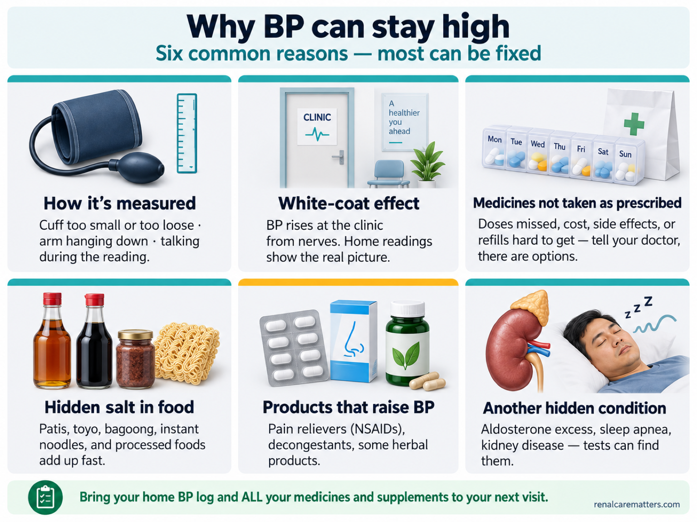
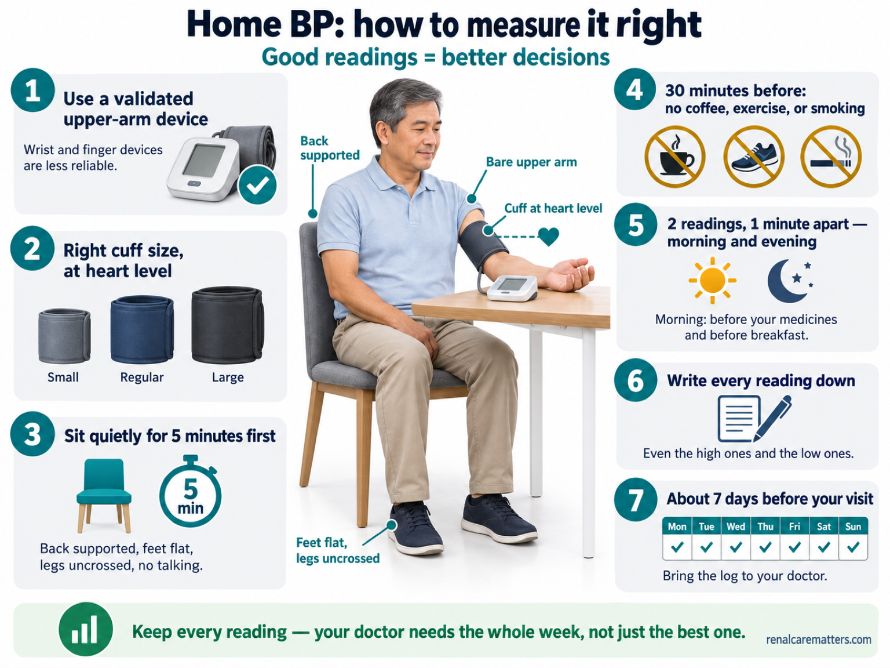
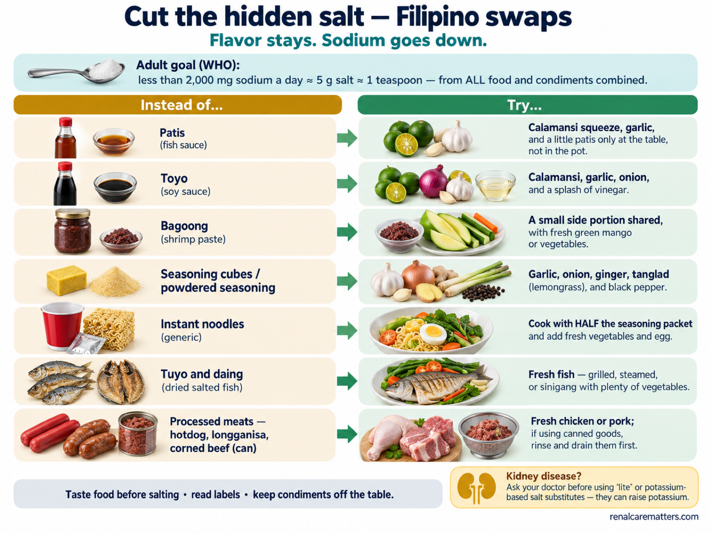
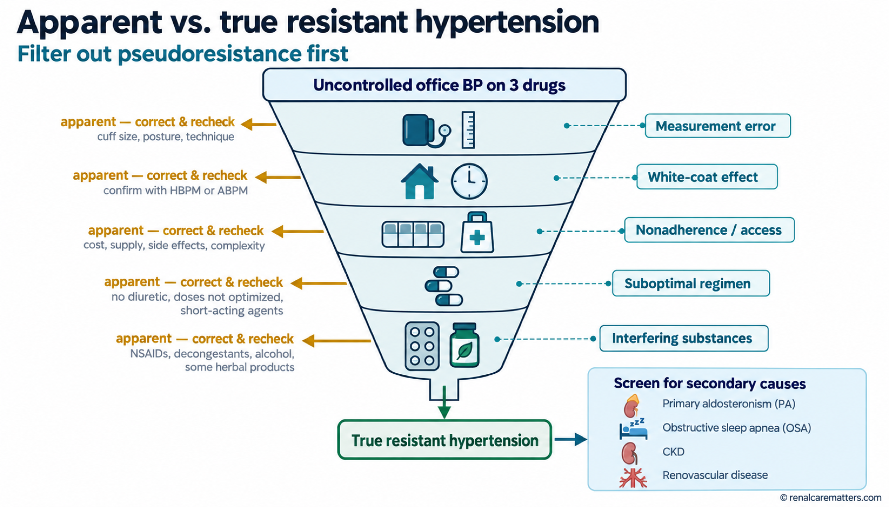
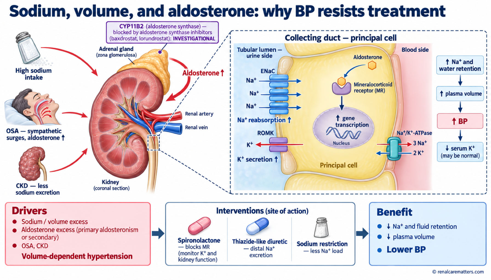
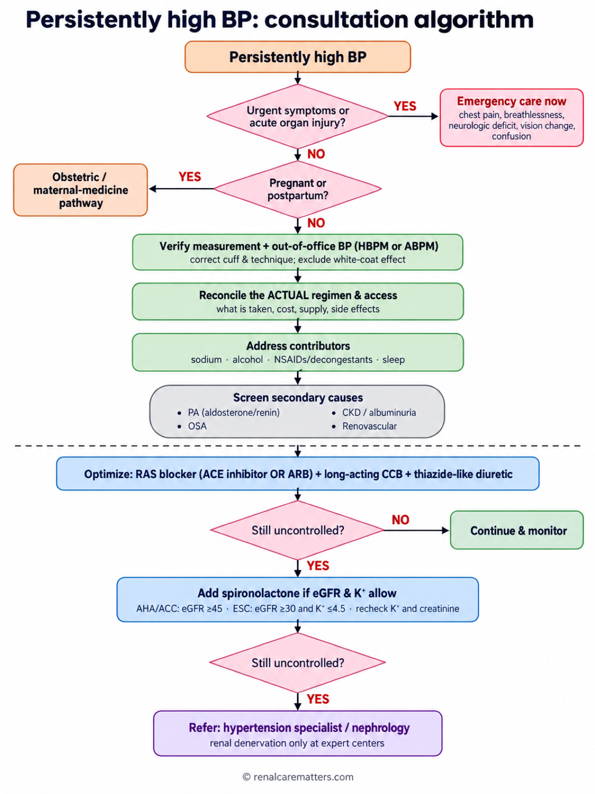
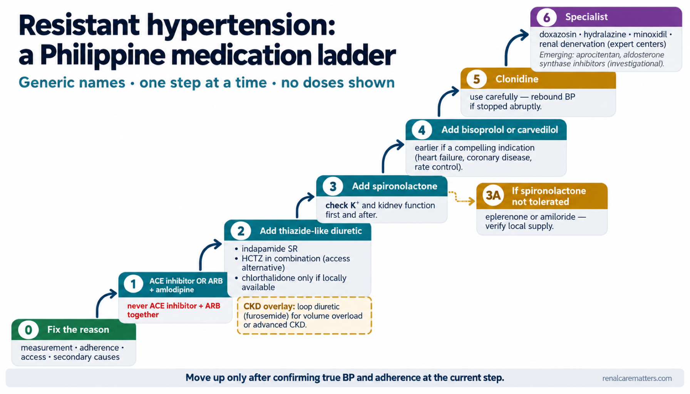

Why is my blood pressure still high?Bakit mataas pa rin ang aking presyon?Nganong taas gihapon ang akong presyon sa dugo?Bakit matas ya pa rin ing presyun ku?
You take your medicines, you have cut back on salt, and yet the number on the machine is still high. That is frustrating, and it is also very common. High blood pressure (BP) that stays above your goal despite treatment usually has a findable reason — often more than one. It rarely means that treatment cannot work for you, and it is not a sign that you have failed.Umiinom ka ng gamot, binawasan mo na ang asin, pero mataas pa rin ang numero sa makina. Nakakainis ito, at napakakaraniwan din. Ang mataas na presyon ng dugo (BP) na nananatiling lampas sa iyong target kahit may gamutan ay kadalasang may nahahanap na dahilan — madalas higit sa isa. Bihira itong nangangahulugang hindi na uubra ang gamutan sa iyo, at hindi ito tanda na nabigo ka.Nag-inom ka sa imong tambal, gikunhoran na nimo ang asin, apan taas gihapon ang numero sa makina. Makapasuko kini, ug komon kaayo. Ang taas nga presyon sa dugo (BP) nga nagpabilin nga lapas sa imong target bisan naa kay tambal kasagaran adunay makit-ang hinungdan — kasagaran labaw pa sa usa. Talagsa ra kini magpasabot nga dili na molihok ang pagtambal kanimo, ug dili kini timailhan nga napakyas ka.Paminum ka king gamut mu, binawasan mu ne ing asin, pero matas ya pa rin ing numero king makina. Makapainis ya iti, at karaniwan ya naman. Ing matas a presyun ning dayat (BP) a manatili lampas king target mu agyang atin kang gamutan, kadalasan atin yang ausan a sangkan — madalas mas dakal pa kesa metung. Bihira ya iting buri nang sabyan a e na gumana ing gamutan keka, at e ya tanda a mebigu ka.
Think of your blood pressure as water pressure in a garden hose. The pressure rises if too much water is pushed in (extra salt and fluid in the body), if the hose is squeezed narrow (tight blood vessels), or if the pump works too hard (hormones that push the heart and kidneys). Each blood-pressure medicine loosens a different one of these. That is why your care team looks for which part of the system is still driving the pressure, rather than simply adding tablet after tablet.Isipin ang presyon ng dugo na parang presyon ng tubig sa hose. Tumataas ito kapag sobrang dami ng tubig ang itinutulak (sobrang asin at likido sa katawan), kapag ang hose ay pinipiga (masikip na ugat), o kapag sobrang lakas ng bomba (mga hormone na nagtutulak sa puso at bato). Ang bawat gamot sa presyon ay lumuluwag sa isa sa mga ito. Kaya hinahanap ng inyong team kung aling bahagi pa ang nagpapataas ng presyon, sa halip na basta magdagdag nang magdagdag ng tableta.Hunahunaa ang presyon sa dugo sama sa presyon sa tubig sa hose. Mosaka kini kung sobra ang tubig nga gitukmod (sobrang asin ug tubig sa lawas), kung gipiit ang hose (hugot nga ugat), o kung sobra ka kusog ang bomba (mga hormone nga nagtukmod sa kasingkasing ug kidney). Ang matag tambal sa presyon moluag sa usa niini. Mao nga pangitaon sa inyong team kung asang bahin pa ang nagpataas sa presyon, imbes nga magdugang lang og tableta.Isipan me ing presyun ning dayat anti mo ing presyun ning danum king hose. Tatas ya nung sobra ing danum a itulak (sobrang asin at danum king katawan), nung pipiitan ing hose (masikip a ugat), o nung sobra kasikan ing bomba (hormone a tutulak king pusu at bato). Balang gamut king presyun lumuag metung kareti. Kaya panintunan ning team yu nung nanu pang bayu ing pampatas presyun, kesa mu ing dagdag dagdag tableta.

Six common reasons blood pressure can stay above goal: the reading itself may be off (wrong cuff or technique), the clinic may raise it (white-coat effect), medicines may be missed or hard to refill, salt may be hidden in food, some pain relievers such as NSAID (nonsteroidal anti-inflammatory drug) medicines or supplements may push it up, and another condition such as excess aldosterone, sleep apnea, or kidney disease may be driving it.
- BP
- Blood pressure
- NSAID
- Nonsteroidal anti-inflammatory drug
The idea in one sentenceAng ideya sa isang pangungusapAng ideya sa usa ka tudlingIng ideya king metung a pangungusap
Before adding another medicine, your care team first checks that the reading is accurate, that the medicines are actually reaching your body every day, and that nothing else — salt, a pain reliever, or a hidden condition — is pushing the pressure up.Bago magdagdag ng gamot, tinitingnan muna ng inyong team kung tama ang pagbasa, kung talagang naiinom araw-araw ang gamot, at kung walang ibang nagpapataas ng presyon — asin, pain reliever, o nakatagong kondisyon.Una modugang og tambal, susihon una sa inyong team kung sakto ang pagbasa, kung tinuod nga mainom adlaw-adlaw ang tambal, ug kung walay laing nagpataas sa presyon — asin, pain reliever, o tinagong kondisyon.Bayu magdagdag gamut, tingnan na pamu ning team yu nung tama ing pamamasa, nung talagang paminum aldo-aldo ing gamut, at nung ala nang aliwa pang pampatas presyun — asin, pain reliever, o makasalikut a kundisyun.
A reading, an average, a diagnosis, and your personal goalIsang pagbasa, isang average, isang diagnosis, at ang iyong sariling targetUsa ka pagbasa, usa ka average, usa ka diagnosis, ug ang imong kaugalingong targetMetung a pamamasa, metung a average, metung a diagnosis, at ing sariling target mu
A single reading is one moment. Blood pressure changes minute to minute with talking, pain, stress, a full bladder, or a cup of coffee. That is why one high number at the clinic, or one low number at home, never tells the whole story. Doctors decide based on an average of many correctly taken readings, ideally including readings taken at home or by a 24-hour monitor.Ang isang pagbasa ay isang sandali lamang. Nagbabago ang presyon bawat minuto dahil sa pagsasalita, sakit, stress, punong pantog, o isang tasang kape. Kaya hindi kailanman sinasabi ng isang mataas na numero sa klinika, o isang mababang numero sa bahay, ang buong kuwento. Nagpapasya ang doktor batay sa average ng maraming tamang pagbasa, mas mainam kung kasama ang mga pagbasa sa bahay o mula sa 24-oras na monitor.Ang usa ka pagbasa usa lang ka higayon. Mausab ang presyon kada minuto tungod sa pagsulti, kasakit, stress, puno nga pantog, o usa ka tasa nga kape. Mao nga ang usa ka taas nga numero sa klinika, o usa ka ubos nga numero sa balay, dili gayud mosulti sa tibuok istorya. Magdesisyon ang doktor base sa average sa daghang sakto nga pagbasa, mas maayo kung apil ang mga pagbasa sa balay o gikan sa 24-oras nga monitor.Ing metung a pamamasa metung ya mu a saglit. Mialiwa ing presyun balang minutu uli ning pamanyalita, sakit, stress, mitmu a pantug, o metung a tasang kape. Kaya ing metung a matas a numero king klinika, o metung a mababa king bale, e na sasabyan ing sablang kuwentu. Mamasya ing doktor batay king average da reng dakal a tamang pamamasa, mas mayap nung kayabe la reng pamamasa king bale o king 24-oras a monitor.
Your personal BP goal depends on your age, your kidneys, diabetes, heart health, and how the reading is taken. Different medical societies use slightly different numbers, and that is normal. Ask your doctor to write your goal down — and whether it applies to clinic readings, home readings, or both.Ang iyong sariling BP target ay nakadepende sa iyong edad, bato, diabetes, kalusugan ng puso, at kung paano kinuha ang pagbasa. Magkakaiba nang kaunti ang numerong ginagamit ng iba't ibang samahang medikal, at normal iyon. Hilingin sa doktor na isulat ang iyong target — at kung para ito sa pagbasa sa klinika, sa bahay, o pareho.Ang imong kaugalingong BP target nagdepende sa imong edad, kidney, diabetes, kahimsog sa kasingkasing, ug kung giunsa pagkuha ang pagbasa. Lahi-lahi og gamay ang numero nga gigamit sa nagkalain-laing medikal nga grupo, ug normal kana. Hangyoa ang doktor nga isulat ang imong target — ug kung para ba kini sa pagbasa sa klinika, sa balay, o pareho.Ing sariling BP target mu makadepende ya king edad mu, bato, diabetes, kalusugan ning pusu, at nung makananu ya kinuwa ing pamamasa. Mimiyaliwa-aliwa ya kekaunti ing numero da reng samahang medikal, at normal ya iti. Pakisabyan me ing doktor mu a isulat na ing target mu — at nung para ya king pamamasa king klinika, king bale, o parehu.
What “resistant hypertension” really meansAno talaga ang ibig sabihin ng “resistant hypertension”Unsa gayud ang buot ipasabot sa “resistant hypertension”Nanu talaga ing buri nang sabyan ning “resistant hypertension”
It is a technical label, not a verdict. Doctors use it only after confirming that BP stays above goal with correct measurement, including readings outside the clinic, while you are taking at least three different types of BP medicine at good doses — one of them a “water pill” (diuretic). Many people who first seem “resistant” turn out to have a fixable reason instead.Ito ay teknikal na tawag, hindi hatol. Ginagamit lamang ito ng doktor matapos kumpirmahin na nananatiling mataas ang BP sa tamang pagsukat, kasama ang mga pagbasa sa labas ng klinika, habang umiinom ka ng hindi bababa sa tatlong uri ng gamot sa presyon sa tamang dosis — isa rito ang “pampaihi” (diuretic). Marami sa mga unang mukhang “resistant” ay may naaayos palang dahilan.Kini usa ka teknikal nga ngalan, dili hukom. Gamiton lang kini sa doktor human makumpirma nga nagpabilin nga taas ang BP sa sakto nga pagsukod, apil ang pagbasa gawas sa klinika, samtang nag-inom ka og labing menos tulo ka klase sa tambal sa presyon sa sakto nga dosis — usa niini ang “pampaihi” (diuretic). Daghan sa unang morag “resistant” adunay mahimo pa diay ayohon nga hinungdan.Teknikal yang lagyu iti, e ya hatul. Gamitan na mu ning doktor kaibat nang kumpirman a manatiling matas ing BP king tamang pamanukat, kayabe ing pamamasa king lual ning klinika, kabang paminum ka king e bababa king atlung klasi ning gamut king presyun king tamang dosis — metung kareti ing “pampaimi” (diuretic). Dakal kareng anti mo “resistant” king umpisa, atin palang ausan a sangkan a malyari yang ayusan.
How to measure your blood pressure at homePaano sukatin ang iyong presyon sa bahayUnsaon pagsukod sa imong presyon sa balayMakananu yang sukatan ing presyun mu king bale
Home readings are one of the most useful things you can bring to your doctor. They show what your pressure is like in real life, away from the stress of the clinic, and they help separate a true problem from a “white-coat” effect — BP that jumps only in front of a health worker. Accuracy matters more than the number of readings, so follow the same routine every time.Ang mga pagbasa sa bahay ay isa sa pinakakapaki-pakinabang na maidadala mo sa doktor. Ipinapakita nito ang tunay na presyon sa araw-araw, malayo sa kaba sa klinika, at tumutulong itong paghiwalayin ang tunay na problema sa “white-coat” effect — BP na tumataas lamang sa harap ng health worker. Mas mahalaga ang katumpakan kaysa sa dami, kaya sundin ang parehong paraan tuwing susukat.Ang mga pagbasa sa balay usa sa labing mapuslanong madala nimo sa doktor. Gipakita niini ang tinuod nga presyon sa adlaw-adlaw, layo sa kakulba sa klinika, ug makatabang kini sa pagbulag sa tinuod nga problema gikan sa “white-coat” effect — BP nga mosaka lang atubangan sa health worker. Mas importante ang katukma kaysa sa kadaghan, busa sunda ang parehong pamaagi kada sukod.Ing pamamasa king bale metung ya kareng pekamakabuluhan a malyari mung dalan king doktor. Ipakit na nung makananu ing tutung presyun king aldo-aldo, marayu king kaba king klinika, at saupan na ing pamaglaus ning tutung problema at ning “white-coat” effect — BP a tatas mu king arapan ning health worker. Mas mayalaga ing katumpakan kesa king dakal, kaya sunud me ing parehung paralan balang sukat.
- Use an automatic upper-arm monitor that has been clinically validated, with a cuff that fits your arm. Wrist and finger devices are less reliable.Gumamit ng awtomatikong monitor sa itaas na braso na napatunayang tumpak, na may cuff na kasya sa iyong braso. Hindi gaanong maaasahan ang pang-pulso at pang-daliri.Gamit og awtomatikong monitor sa ibabaw nga bukton nga napamatud-an nga tukma, nga adunay cuff nga haom sa imong bukton. Dili kaayo kasaligan ang sa pulso ug tudlo.Gumamit kang awtomatikong monitor king babo ning braso a mepatunayan a tumpak, at atin cuff a kasya king braso mu. E masyadung asahan ing king pulsu at taliri.
- Avoid coffee, cigarettes, and exercise for 30 minutes before. Empty your bladder.Iwasan ang kape, sigarilyo, at ehersisyo 30 minuto bago magsukat. Umihi muna.Likayi ang kape, sigarilyo, ug ehersisyo 30 minutos una mosukod. Ihi una.Iwasan ing kape, sigarilyu, at ehersisyu 30 minutu bayu manukat. Mimi ka pamu.
- Sit quietly for 5 minutes, back supported, feet flat, legs uncrossed, arm resting on a table so the cuff is at heart level. Do not talk or use your phone.Umupo nang tahimik nang 5 minuto, nakasandal ang likod, nakalapat ang paa, hindi naka-krus ang binti, nakapatong ang braso sa mesa para ang cuff ay kapantay ng puso. Huwag magsalita o gumamit ng cellphone.Lingkod nga hilom sulod sa 5 minutos, nakasandig ang likod, nakatapak ang tiil, dili nakakrus ang bitiis, nakapahulay ang bukton sa lamesa aron ang cuff kapareho sa gitas-on sa kasingkasing. Ayaw pagsulti o paggamit sa cellphone.Makalukluk kang tahimik 5 minutu, makasandal ing gulut, makalapat ing bitis, e makakrus, makapatung ing braso king lamesa ban ing cuff kapantay ning pusu. E ka manyalita o gumamit cellphone.
- Take two readings, one minute apart, in the morning (before your medicines and breakfast) and in the evening.Kumuha ng dalawang pagbasa, isang minuto ang pagitan, sa umaga (bago uminom ng gamot at mag-almusal) at sa gabi.Pagkuha og duha ka pagbasa, usa ka minuto ang gilay-on, sa buntag (una moinom sa tambal ug mamahaw) ug sa gabii.Kumuwa kang adwang pamamasa, metung a minutu ing pagitan, king abak (bayu minum gamut at mangan almusal) at king bengi.
- Write down every reading with the date and time — even the ones that look “bad.” Do this for about 7 days before your clinic visit, or as your doctor instructs.Isulat ang bawat pagbasa kasama ang petsa at oras — pati ang mga mukhang “pangit.” Gawin ito nang mga 7 araw bago ang iyong check-up, o ayon sa bilin ng doktor.Isulat ang matag pagbasa uban ang petsa ug oras — apil ang morag “daotan.” Buhata kini mga 7 ka adlaw una sa imong check-up, o sumala sa tambag sa doktor.Isulat me ing balang pamamasa kayabe ing petsa at oras — pati reng anti mo “marok.” Gawan me iti mga 7 aldo bayu ing check-up mu, o agpang king bilin ning doktor.

Correct home blood pressure technique: a validated upper-arm monitor and properly sized cuff, five quiet minutes seated with back supported and feet flat, the cuff at heart level, two readings a minute apart morning and evening, and every reading written down.
- BP
- Blood pressure
One reading is not a reason to change your medicinesAng isang pagbasa ay hindi dahilan para baguhin ang gamotAng usa ka pagbasa dili hinungdan aron usbon ang tambalIng metung a pamamasa e ya sangkan ban aliwan ing gamut
Do not skip, double, or stop a medicine because of one high or low reading. Bring your log to your doctor, who will look at the average and the pattern. If a reading is very high, see the urgent-help box below.Huwag laktawan, doblehin, o itigil ang gamot dahil sa isang mataas o mababang pagbasa. Dalhin ang iyong talaan sa doktor, na titingin sa average at pattern. Kung napakataas ng pagbasa, tingnan ang kahon ng agarang tulong sa ibaba.Ayaw laktawi, doblaha, o hunonga ang tambal tungod sa usa ka taas o ubos nga pagbasa. Dad-a ang imong listahan sa doktor, nga motan-aw sa average ug pattern. Kung taas kaayo ang pagbasa, tan-awa ang kahon sa dinaliang tabang sa ubos.E mu laktawan, doblen, o itigil ing gamut uli ning metung a matas o mababang pamamasa. Dalan me ing listaan mu king doktor, a tingnan na ing average at pattern. Nung sobrang tas ing pamamasa, lawen me ing kahon ning agarang saup king lalam.
When to get help right awayKailan dapat humingi agad ng tulongKanus-a dayon mangayo og tabangKapilan ka dapat manyawad saup agad
Go to the nearest emergency room now if you have high BP with any of thesePumunta agad sa pinakamalapit na emergency room kung mataas ang BP at may alinman sa mga itoAdto dayon sa labing duol nga emergency room kung taas ang BP ug aduna niiniMunta ka agad king pekamalapit a emergency room nung matas ing BP at atin kang nanuman kareti
Chest pain or pressure · severe shortness of breath · sudden weakness, numbness, or drooping of the face, arm, or leg · difficulty speaking · confusion or a seizure · sudden severe headache · sudden loss or blurring of vision. Do not wait to finish your BP log, and do not take extra tablets at home. In the Philippines, the national emergency hotline is 911.Pananakit o paninikip ng dibdib · matinding hirap sa paghinga · biglaang panghihina, pamamanhid, o pagngiwi ng mukha, braso, o binti · hirap magsalita · pagkalito o kombulsyon · biglaang matinding sakit ng ulo · biglaang pagkawala o paglabo ng paningin. Huwag nang hintaying matapos ang BP log, at huwag uminom ng dagdag na tableta sa bahay. Sa Pilipinas, ang pambansang emergency hotline ay 911.Sakit o kapiot sa dughan · grabe nga kalisod sa pagginhawa · kalit nga kaluya, pagkamanhid, o pagngiwi sa nawong, bukton, o bitiis · kalisod sa pagsulti · kalibog o kombulsyon · kalit nga grabe nga sakit sa ulo · kalit nga pagkawala o paglabo sa panan-aw. Ayaw na hulata nga mahuman ang BP log, ug ayaw pag-inom og dugang tableta sa balay. Sa Pilipinas, ang nasyonal nga emergency hotline mao ang 911.Sakit o pamipit king salu · mabayat a kasakitan king pamanginawa · bigla a kaluyan, kamanhid, o pamangiwi ning lupa, braso, o bitis · kasakitan king pamanyalita · pamikalitu o kombulsyun · bigla a mabayat a sakit ning buntuk · bigla a pamanyira o pamanlabu ning panaldo. E mu na panayan a mayari ing BP log, at e ka minum dagdag a tableta king bale. King Pilipinas, ing pambansang emergency hotline ya ing 911.
If your reading is very high (for example, 180/110 or above) but you feel well, sit quietly for 5 minutes and measure again correctly. If it is still that high, call your doctor or clinic the same day. A very high number without symptoms usually needs prompt review and careful, gradual lowering over hours to days — not a rush to the hospital for an injection, and not a handful of extra tablets.Kung napakataas ng pagbasa (halimbawa, 180/110 o higit pa) pero maayos ang pakiramdam mo, umupo nang tahimik nang 5 minuto at sukatin muli nang tama. Kung ganoon pa rin kataas, tawagan ang iyong doktor o klinika sa araw ding iyon. Ang napakataas na numero na walang sintomas ay kadalasang nangangailangan ng agarang pagsusuri at maingat at unti-unting pagpapababa sa loob ng ilang oras hanggang araw — hindi pagmamadali sa ospital para sa iniksyon, at hindi dakot ng dagdag na tableta.Kung taas kaayo ang pagbasa (pananglitan, 180/110 o labaw pa) apan maayo ang imong gibati, lingkod nga hilom sulod sa 5 minutos ug sukda pag-usab sa sakto. Kung ingon gihapon kataas, tawagi ang imong doktor o klinika sa samang adlaw. Ang taas kaayo nga numero nga walay sintomas kasagaran nagkinahanglan og dali nga pagsusi ug mabinantayon ug hinay-hinay nga pagpaubos sulod sa pipila ka oras hangtod adlaw — dili pagdali sa ospital para sa indyeksyon, ug dili usa ka kumkom nga dugang tableta.Nung sobrang tas ing pamamasa (alimbawa, 180/110 o mas matas) pero mayap ing pakiramdam mu, lukluk kang tahimik 5 minutu at sukatan me pasibayu king tamang paralan. Nung anti pa murin katas, tawagan me ing doktor o klinika mu king aldo mu murin. Ing sobrang matas a numero a alang sintomas kadalasan kailangan nang agarang pamanuri at maingat at dahan-dahan a pamababa king lalam ning pilan a oras angga aldo — e ya pamagmadali king ospital para king iniksyun, at e ya dakut a dagdag a tableta.
Pregnant or recently gave birth?Buntis o kapapanganak lamang?Mabdos o bag-o lang nanganak?Masikan o bayu mung menganak?
High blood pressure during pregnancy or in the weeks after delivery follows different, stricter rules. A reading of 140/90 or higher, a severe headache, vision changes, upper-belly pain, or swelling of the face and hands needs same-day assessment by your obstetric team. Do not use the general advice on this page to wait at home.Ang mataas na presyon habang buntis o sa mga linggo matapos manganak ay may iba at mas mahigpit na patakaran. Ang pagbasang 140/90 o higit pa, matinding sakit ng ulo, pagbabago sa paningin, sakit sa itaas na tiyan, o pamamaga ng mukha at kamay ay nangangailangan ng pagsusuri sa araw ding iyon ng iyong OB team. Huwag gamitin ang pangkalahatang payo sa pahinang ito para maghintay sa bahay.Ang taas nga presyon samtang mabdos o sa mga semana human manganak adunay lahi ug mas estrikto nga lagda. Ang pagbasa nga 140/90 o labaw pa, grabe nga sakit sa ulo, kausaban sa panan-aw, sakit sa ibabaw nga tiyan, o paghubag sa nawong ug kamot nagkinahanglan og pagsusi sa samang adlaw sa imong OB team. Ayaw gamita ang kinatibuk-ang tambag niini nga panid aron maghulat sa balay.Ing matas a presyun kabang masikan o king pilan a dominggu kaibat menganak atin yang aliwa at mas mayigpit a patakaran. Ing pamamasang 140/90 o mas matas, mabayat a sakit ning buntuk, pamanalili ning panaldo, sakit king babo ning atyan, o pamamaga ning lupa at gamat kailangan dang pamanuri king aldo mu murin ning OB team mu. E mu gamitan ing pangkalahatang payu king bulung a iti ban manaya king bale.
Why you may need several medicines — and how to make them easierBakit maaaring kailangan mo ng ilang gamot — at paano ito gawing mas madaliNganong mahimong kinahanglan nimo og pipila ka tambal — ug unsaon kini paghimong mas sayonBakit malyaring kailangan mu ing pilan a gamut — at makananu lang gawang mas masalese
Different BP medicines work on different parts of the “garden hose.” One relaxes the vessels, one blocks a hormone that tightens them and makes the body hold salt, and a “water pill” (diuretic) helps the kidneys release extra salt and fluid. Used together at low-to-moderate doses, they usually work better and cause fewer side effects than one medicine pushed to a high dose. Many are available as combination tablets — two medicines in one pill — which makes the daily routine simpler.Iba-iba ang bahaging tinatrabaho ng bawat gamot sa BP sa “hose.” May nagpaparelaks ng ugat, may humaharang sa hormone na nagpapasikip nito at nagpapaipon ng asin sa katawan, at may “pampaihi” (diuretic) na tumutulong sa bato na ilabas ang sobrang asin at likido. Kapag pinagsama sa mababa hanggang katamtamang dosis, kadalasang mas epektibo at mas kaunti ang side effect kaysa sa isang gamot na mataas ang dosis. Marami ang mayroong kombinasyong tableta — dalawang gamot sa isang tableta — na nagpapadali sa araw-araw.Lahi-lahi ang bahin nga gitrabaho sa matag tambal sa BP sa “hose.” Adunay mopahuyang sa ugat, adunay mobabag sa hormone nga mopiit niini ug mopatigom og asin sa lawas, ug adunay “pampaihi” (diuretic) nga motabang sa kidney sa pagpagawas sa sobrang asin ug tubig. Kung gihiusa sa ubos hangtod tunga-tunga nga dosis, kasagaran mas epektibo ug mas gamay ang side effect kaysa usa ka tambal nga taas ang dosis. Daghan ang adunay kombinasyon nga tableta — duha ka tambal sa usa ka tableta — nga mopasayon sa adlaw-adlaw.Mimiyaliwa ing bayung tatrabawu ning balang gamut king BP king “hose.” Atin pampaluag ugat, atin mamabarang king hormone a pamasikip kaniti at pamipun asin king katawan, at atin “pampaimi” (diuretic) a saup king bato ban ilual ing sobrang asin at danum. Nung pisamban king mababa angga katamtamang dosis, kadalasan mas epektibu la at mas kakaunti ing side effect kesa king metung a gamut a matas ing dosis. Dakal ing atin kombinasyung tableta — adwang gamut king metung a tableta — a pamagsalese king aldo-aldo.
If taking them every day is hard, say soKung mahirap inumin araw-araw, sabihinKung lisod inumon adlaw-adlaw, isultiNung mirap inumen aldo-aldo, sabyan me
Missed doses are almost never about laziness. They happen because of cost, side effects, a complicated schedule, shift work, running out between paydays, or a pharmacy that did not have the medicine. Your doctor can often fix these: switching to a once-daily or combination tablet, choosing a generic, adjusting the timing, or changing a medicine that causes swelling, cough, or frequent urination. Tell your care team what is really happening — it is information they need, not a confession.Ang hindi pag-inom ng gamot ay halos hindi dahil sa katamaran. Nangyayari ito dahil sa gastos, side effect, komplikadong iskedyul, trabahong shifting, pagkaubos bago sumahod, o botikang walang stock. Kadalasang naaayos ito ng doktor: paglipat sa isang-beses-isang-araw o kombinasyong tableta, pagpili ng generic, pag-aayos ng oras, o pagpapalit ng gamot na nagdudulot ng pamamaga, ubo, o madalas na pag-ihi. Sabihin sa inyong team ang totoong nangyayari — impormasyon ito na kailangan nila, hindi pag-amin ng kasalanan.Ang dili pag-inom sa tambal halos dili gayud tungod sa katapulan. Mahitabo kini tungod sa gasto, side effect, komplikado nga iskedyul, trabaho nga shifting, pagkahurot una sa sweldo, o botika nga walay stock. Kasagaran maayo kini sa doktor: pagbalhin sa kausa-kada-adlaw o kombinasyon nga tableta, pagpili og generic, pag-usab sa oras, o pag-ilis sa tambal nga hinungdan sa paghubag, ubo, o kanunay nga pag-ihi. Isulti sa inyong team ang tinuod nga nahitabo — impormasyon kini nga kinahanglan nila, dili pag-angkon sa sala.Ing e pamaminum gamut halus e ya uli ning kalanga. Mangyari ya uli ning gastus, side effect, komplikadung iskedyul, trabawung shifting, pamanubus bayu sweldo, o butikang alang stock. Kadalasan ayusan ne ning doktor: pamanalili king misan-king-aldo o kombinasyung tableta, pamamili generic, pamag-ayus ning oras, o pamanalili ning gamut a pamamaga, ubu, o malalam a pamimi. Sabyan mu king team yu ing tutung mangyayari — impormasyun ya iti a kailangan da, e ya pamanamin kasalanan.
Keep a generic-name listMagtabi ng listahan ng generic na pangalanPagtipig og listahan sa generic nga ngalanMagtagu kang listaan da reng generic a lagyu
Write each medicine's generic name, strength, what it is for, and when you take it. Brand names differ between pharmacies; the generic name lets any pharmacist find the same medicine. Ask your doctor or pharmacist about lower-cost generics, and about current Philippine Health Insurance Corporation (PhilHealth) primary-care (YAKAP/GAMOT) coverage in your area — availability varies by facility.Isulat ang generic na pangalan ng bawat gamot, lakas, para saan ito, at kailan iniinom. Iba-iba ang brand sa bawat botika; sa generic na pangalan, mahahanap ng kahit anong parmasyutiko ang parehong gamot. Magtanong sa doktor o parmasyutiko tungkol sa mas murang generic, at sa kasalukuyang saklaw ng PhilHealth primary care (YAKAP/GAMOT) sa inyong lugar — iba-iba ito sa bawat pasilidad.Isulat ang generic nga ngalan sa matag tambal, kusog, para asa kini, ug kanus-a imnon. Lahi-lahi ang brand sa matag botika; pinaagi sa generic nga ngalan, makit-an sa bisan unsang parmasyutiko ang parehong tambal. Pangutana sa doktor o parmasyutiko bahin sa mas barato nga generic, ug sa karon nga sakop sa PhilHealth primary care (YAKAP/GAMOT) sa inyong lugar — lahi-lahi kini matag pasilidad.Isulat me ing generic a lagyu ning balang gamut, kasikan, nung para king nanu, at kapilan ya inumen. Mimiyaliwa ing brand king balang butika; king generic a lagyu, apaintunan ning nanumang parmasyutiku ing parehung gamut. Kutang me ing doktor o parmasyutiku tungkul king mas mura a generic, at king kasalukuyang sakup ning PhilHealth primary care (YAKAP/GAMOT) king lugar yu — mimiyaliwa ya king balang pasilidad.
Everyday things that can push blood pressure upMga pang-araw-araw na bagay na maaaring magpataas ng presyonMga adlaw-adlaw nga butang nga makapataas sa presyonDeng aldo-aldo a bage a malyaring pampatas presyun
- Pain relievers such as ibuprofen, naproxen, mefenamic acid, and other nonsteroidal anti-inflammatory drugs (NSAIDs) make the kidneys hold salt and blunt several BP medicines. They can also harm the kidneys. Paracetamol is usually the safer choice — ask first.Ang mga pain reliever tulad ng ibuprofen, naproxen, mefenamic acid, at iba pang NSAID ay nagpapaipon ng asin sa bato at nagpapahina sa ilang gamot sa BP. Maaari rin itong makasira sa bato. Kadalasang mas ligtas ang paracetamol — magtanong muna.Ang mga pain reliever sama sa ibuprofen, naproxen, mefenamic acid, ug uban pang NSAID mopatigom og asin sa kidney ug mopahuyang sa pipila ka tambal sa BP. Makadaot usab kini sa kidney. Kasagaran mas luwas ang paracetamol — pangutana una.Deng pain reliever anti king ibuprofen, naproxen, mefenamic acid, at aliwa pang NSAID pamipun asin king bato at pamaluya kareng pilan a gamut king BP. Malyari da ring sirain ing bato. Kadalasan mas ligtas ing paracetamol — mangutang ka pamu.
- Cold and sinus medicines with decongestants (phenylephrine, pseudoephedrine), some diet pills, and energy drinks.Mga gamot sa sipon at sinus na may decongestant (phenylephrine, pseudoephedrine), ilang diet pill, at energy drink.Mga tambal sa sip-on ug sinus nga adunay decongestant (phenylephrine, pseudoephedrine), pipila ka diet pill, ug energy drink.Deng gamut king sipun at sinus a atin decongestant (phenylephrine, pseudoephedrine), pilan a diet pill, at energy drink.
- Steroid tablets (such as prednisone), some birth-control pills, and certain other prescription medicines — do not stop these on your own; your doctor can weigh the options.Steroid na tableta (tulad ng prednisone), ilang pills, at iba pang resetang gamot — huwag itigil nang mag-isa; timbangin ito ng iyong doktor.Steroid nga tableta (sama sa prednisone), pipila ka pills, ug uban pang resetang tambal — ayaw hunonga nga ikaw ra; timbangon kini sa imong doktor.Steroid a tableta (anti king prednisone), pilan a pills, at aliwa pang resetang gamut — e mu itigil kaybat mu; timbangan ne ning doktor mu.
- Alcohol, especially heavy weekend drinking, and poor or short sleep. Loud snoring with pauses in breathing can be a sign of sleep apnea, a treatable cause of stubborn BP.Alak, lalo na ang malakas na inuman tuwing weekend, at kulang o hindi maayos na tulog. Ang malakas na hilik na may paghinto ng paghinga ay maaaring tanda ng sleep apnea, isang nagagamot na sanhi ng matigas na BP.Alkohol, ilabi na ang kusog nga inom matag weekend, ug kulang o dili maayo nga tulog. Ang kusog nga hagok nga adunay paghunong sa pagginhawa mahimong timailhan sa sleep apnea, usa ka matambalan nga hinungdan sa matig-a nga BP.Alak, lalu na ing masikan a inuman balang weekend, at kulang o e mayap a tudtud. Ing masikan a ngurek a atin pamipun ning pamanginawa malyaring tanda ning sleep apnea, metung a malyaring gamutan a sangkan ning matagas a BP.
- Herbal teas and supplements, including licorice root, ginseng, and products with undisclosed ingredients. Bring every bottle to your visit.Herbal na tsaa at supplement, kasama ang licorice root, ginseng, at mga produktong may hindi nakalistang sangkap. Dalhin ang bawat bote sa iyong check-up.Herbal nga tsa ug supplement, apil ang licorice root, ginseng, ug mga produkto nga adunay wala gilista nga sangkap. Dad-a ang matag botelya sa imong check-up.Herbal a tsa at supplement, kayabe ing licorice root, ginseng, at deng produktu a atin e makalistang sangkap. Dalan mu ing balang bote king check-up mu.
None of these means you did something wrong. They are simply worth listing, because removing one of them can lower BP as much as adding a new medicine.Wala sa mga ito ang nangangahulugang may mali kang ginawa. Sulit lamang itong ilista, dahil ang pag-alis ng isa sa mga ito ay maaaring magpababa ng BP na kasinlaki ng pagdaragdag ng bagong gamot.Walay usa niini ang nagpasabot nga naa kay nabuhat nga sayop. Angay lang kini ilista, kay ang pagtangtang sa usa niini makapaubos sa BP sama kadako sa pagdugang og bag-ong tambal.Alinaman kareti ing buri nang sabyan a atin kang megawang mali. Maragul mu ing kabaldugan na ilista la, uling ing pamaglako king metung kareti malyaring pababan ing BP anti kadakal ning pamagdagdag bayung gamut.
Salt in Filipino meals: small changes that add upAsin sa pagkaing Pilipino: maliliit na pagbabago na may malaking epektoAsin sa pagkaon nga Pilipino: gagmay nga kausaban nga dako ang epektoAsin king pamangan Pilipinu: malati a pamanalili a maragul ing epektu
Salt makes the body hold water, which fills the “hose” and raises pressure — and it blunts several BP medicines. In people whose BP is hard to control, cutting salt often lowers the top number noticeably, sometimes as much as a medicine. The World Health Organization (WHO) advises adults to keep sodium below 2,000 mg a day, about 5 grams of salt (roughly one level teaspoon) from all sources combined — including what is already in sauces, canned goods, and snacks.Nagpapaipon ng tubig sa katawan ang asin, na pumupuno sa “hose” at nagpapataas ng presyon — at pinapahina nito ang ilang gamot sa BP. Sa mga taong mahirap kontrolin ang BP, ang pagbabawas ng asin ay kadalasang kapansin-pansing nagpapababa ng itaas na numero, minsan kasinlaki ng isang gamot. Payo ng World Health Organization (WHO) sa mga nasa hustong gulang na panatilihin ang sodium sa ilalim ng 2,000 mg bawat araw, mga 5 gramo ng asin (mga isang kutsaritang pantay) mula sa lahat ng pinagmulan — kasama ang nasa sawsawan, de-lata, at sitsirya.Mopatigom og tubig sa lawas ang asin, nga mopuno sa “hose” ug mopataas sa presyon — ug mopahuyang kini sa pipila ka tambal sa BP. Sa mga tawo nga lisod kontrolon ang BP, ang pagkunhod sa asin kasagaran klaro nga mopaubos sa ibabaw nga numero, usahay sama kadako sa usa ka tambal. Tambag sa World Health Organization (WHO) sa mga hamtong nga ipabilin ang sodium ubos sa 2,000 mg kada adlaw, mga 5 gramo sa asin (mga usa ka patag nga kutsarita) gikan sa tanang gigikanan — apil ang anaa sa sawsawan, de-lata, ug sitsirya.Pamipun danum king katawan ing asin, a pamapunu king “hose” at pampatas presyun — at pamaluya ya kareng pilan a gamut king BP. King tau a mirap kontrolan ing BP, ing pamamawas asin kadalasan malino yang pababan ing babo a numero, misan anti kadakal ning metung a gamut. Payu ning World Health Organization (WHO) kareng maragul na a panatilian ing sodium king lalam ning 2,000 mg balang aldo, mga 5 gramu ning asin (mga metung a kutsaritang pantay) manibat king sablang pikuanan — kayabe ing atiu king sawsawan, de-lata, at sitsirya.

Common high-sodium foods in Filipino kitchens (patis, toyo, bagoong, seasoning cubes, instant noodles, dried fish, processed meats) paired with lower-salt swaps such as calamansi, garlic, onion, ginger, fresh fish and vegetables, and using half the noodle seasoning packet. The adult goal is under 2,000 mg sodium a day from all sources.
- WHO
- World Health Organization
- Taste before adding patis, toyo, or bagoong, and put the sawsawan in a small saucer rather than pouring it over the rice.Tikman muna bago magdagdag ng patis, toyo, o bagoong, at ilagay ang sawsawan sa maliit na platito sa halip na ibuhos sa kanin.Tilawi una sa pagdugang og patis, toyo, o bagoong, ug ibutang ang sawsawan sa gamay nga platito imbes ibubo sa kan-on.Tikman me pamu bayu magdagdag patis, toyo, o bagoong, at ibili me ing sawsawan king malating platitu kesa ibuis king nasi.
- Flavor with calamansi, vinegar, garlic, onion, ginger, tanglad, and pepper instead of seasoning cubes.Pampalasa ng calamansi, suka, bawang, sibuyas, luya, tanglad, at paminta sa halip na seasoning cube.Pahumotan og calamansi, suka, ahos, sibuyas, luy-a, tanglad, ug paminta imbes seasoning cube.Pampanyaman ing calamansi, sukang, bawang, sibuyas, luya, tanglad, at paminta kesa seasoning cube.
- Use only half the seasoning packet in instant noodles, and rinse canned sardines or corned beef where practical.Kalahati lamang ng seasoning packet sa instant noodles, at banlawan ang de-latang sardinas o corned beef kung kaya.Katunga ra sa seasoning packet sa instant noodles, ug hugasi ang de-latang sardinas o corned beef kung mahimo.Kapitna mu ning seasoning packet king instant noodles, at banlawan ing de-latang sardinas o corned beef nung malyari.
- Treat tuyo, daing, hotdogs, longganisa, and chicharon as occasional foods, and read the sodium line on labels.Gawing paminsan-minsan lamang ang tuyo, daing, hotdog, longganisa, at chicharon, at basahin ang sodium sa label.Himoang panagsa ra ang tuyo, daing, hotdog, longganisa, ug chicharon, ug basaha ang sodium sa label.Gawan mung paminsan-minsan mu ing tuyo, daing, hotdog, longganisa, at chicharon, at basan me ing sodium king label.
Kidney disease? Ask before using “lite” saltMay sakit sa bato? Magtanong bago gumamit ng “lite” saltNaay sakit sa kidney? Pangutana una mogamit og “lite” saltAtin kang sakit king bato? Mangutang ka bayu gumamit “lite” salt
Many low-sodium salt substitutes replace sodium with potassium. They help many people, but if your kidneys do not remove potassium well, or you take certain BP medicines, they can raise potassium to dangerous levels. Ask your doctor before using one.Maraming pamalit-asin na mababa sa sodium ang pinapalitan ng potassium ang sodium. Nakakatulong ito sa marami, pero kung hindi maayos na nailalabas ng bato ang potassium, o umiinom ka ng ilang gamot sa BP, maaari itong magpataas ng potassium sa mapanganib na antas. Magtanong muna sa doktor.Daghang puli-asin nga ubos sa sodium ang nagpuli sa sodium og potassium. Makatabang kini sa daghan, apan kung dili maayo ang pagpagawas sa kidney sa potassium, o nag-inom ka og pipila ka tambal sa BP, mahimo kining mopataas sa potassium sa delikado nga lebel. Pangutana una sa doktor.Dakal a pamalit-asin a mababa king sodium ing pisalilian king potassium ing sodium. Makasaup ya kareng dakal, pero nung e mayap ilual ning bato ing potassium, o paminum ka kareng pilan a gamut king BP, malyari nang pataasan ing potassium king delikadung antas. Mangutang ka pamu king doktor.
Why your doctor may order more testsBakit maaaring mag-utos ng karagdagang pagsusuri ang doktorNganong mahimong mo-order og dugang pagsusi ang doktorBakit malyaring mag-order ing doktor karagdagang pamanuri
Stubborn BP is sometimes caused by another condition that can be treated directly. The most common hidden one is primary aldosteronism: one or both adrenal glands (small glands above the kidneys) make too much of the salt-keeping hormone aldosterone. A simple blood test comparing aldosterone with renin can screen for it. A small study of Filipino adults with resistant hypertension in Cagayan de Oro found it in 3 of 14 people tested — too few to give a national figure, but a reminder that it is worth looking for here too.Ang matigas na BP ay minsang sanhi ng ibang kondisyong direktang nagagamot. Ang pinakakaraniwang nakatago ay ang primary aldosteronism: ang isa o dalawang adrenal gland (maliit na glandula sa ibabaw ng bato) ay gumagawa ng sobrang aldosterone, ang hormone na nagpapaipon ng asin. Maaaring i-screen ito ng simpleng pagsusuri ng dugo na naghahambing ng aldosterone at renin. Isang maliit na pag-aaral sa mga Pilipinong may resistant hypertension sa Cagayan de Oro ang nakakita nito sa 3 sa 14 na nasuri — masyadong kaunti para sa pambansang bilang, pero paalala na sulit itong hanapin dito rin.Ang matig-a nga BP usahay hinungdan sa laing kondisyon nga direktang matambalan. Ang labing komon nga tinago mao ang primary aldosteronism: ang usa o duha ka adrenal gland (gamay nga glandula ibabaw sa kidney) mohimo og sobrang aldosterone, ang hormone nga mopatigom og asin. Mahimo kining i-screen sa yano nga pagsusi sa dugo nga nagtandi sa aldosterone ug renin. Usa ka gamay nga pagtuon sa mga Pilipino nga adunay resistant hypertension sa Cagayan de Oro ang nakakita niini sa 3 sa 14 nga gisusi — gamay ra kaayo para sa nasyonal nga numero, apan pahinumdom nga angay kining pangitaon dinhi usab.Ing matagas a BP misan sangkan ning aliwang kundisyun a malyaring gamutan diretsu. Ing pekakaraniwan a makasalikut ya ing primary aldosteronism: ing metung o adwang adrenal gland (malating glandula king babo ning bato) gagawa lang sobrang aldosterone, ing hormone a pamipun asin. Malyari yang i-screen ning simpling pamanuri ning dayat a mamaralumbe king aldosterone at renin. Metung a malating pamanigaral kareng Pilipinu a atin resistant hypertension king Cagayan de Oro ing mikit kaniti king 3 kareng 14 a menuri — kakaunti para king pambansang bilang, pero paalala a mayalaga yang panintunan keni naman.
- Kidney tests — creatinine with estimated glomerular filtration rate (eGFR), potassium, and a urine albumin test — show whether BP is affecting the kidneys, and whether the kidneys are driving the BP.Pagsusuri sa bato — creatinine at eGFR, potassium, at urine albumin — ay nagpapakita kung naaapektuhan ng BP ang bato, at kung ang bato ang nagpapataas ng BP.Pagsusi sa kidney — creatinine ug eGFR, potassium, ug urine albumin — mopakita kung naapektuhan sa BP ang kidney, ug kung ang kidney ba ang nagpataas sa BP.Pamanuri king bato — creatinine at eGFR, potassium, at urine albumin — ipakit na nung apektadu ning BP ing bato, at nung ing bato ya ing pampatas BP.
- A sleep study if you snore loudly, stop breathing in your sleep, or feel very sleepy in the daytime.Sleep study kung malakas humilik, humihinto ang paghinga habang tulog, o sobrang antok sa araw.Sleep study kung kusog mohagok, mohunong ang pagginhawa samtang natulog, o hilabihang katulgon sa adlaw.Sleep study nung masikan kang ngurek, mipupun ing pamanginawa kabang tutudtud, o sobrang tudtuan king aldo.
- A 24-hour BP monitor, worn at home for a day and night, when clinic and home readings disagree.24-oras na BP monitor, isinusuot sa bahay nang isang araw at gabi, kapag hindi magkatugma ang pagbasa sa klinika at sa bahay.24-oras nga BP monitor, gisul-ob sa balay sulod sa usa ka adlaw ug gabii, kung dili magkauyon ang pagbasa sa klinika ug sa balay.24-oras a BP monitor, isusulud king bale king metung a aldo at bengi, nung e mitugma ing pamamasa king klinika at king bale.
Before hormone tests: do not stop your medicines on your ownBago ang hormone test: huwag itigil ang gamot nang mag-isaUna ang hormone test: ayaw hunonga ang tambal nga ikaw raBayu ing hormone test: e mu itigil ing gamut kaybat mu
Some BP medicines affect the aldosterone and renin result, so your doctor may adjust them before testing. Only your doctor should decide this, and it is sometimes done in steps with close monitoring. Stopping BP medicines yourself can be dangerous.May ilang gamot sa BP na nakakaapekto sa resulta ng aldosterone at renin, kaya maaaring ayusin ito ng doktor bago ang pagsusuri. Ang doktor lamang ang dapat magpasya nito, at minsan ginagawa ito nang paunti-unti na may masusing pagbabantay. Mapanganib ang pagtigil ng gamot sa BP nang mag-isa.Adunay pipila ka tambal sa BP nga makaapekto sa resulta sa aldosterone ug renin, busa mahimong usbon kini sa doktor una ang pagsusi. Ang doktor ra ang angay modesisyon niini, ug usahay buhaton kini hinay-hinay uban ang suod nga pagbantay. Delikado ang paghunong sa tambal sa BP nga ikaw ra.Atin pilan a gamut king BP a makaapektu king resulta ning aldosterone at renin, kaya malyari lang ayusan ning doktor bayu ing pamanuri. Ing doktor mu ing dapat mamasya kaniti, at misan gagawan yang dahan-dahan kayabe ing masalese a pamanyalaga. Delikadu ing pamamipun gamut king BP kaybat mu.
If you also have kidney disease or diabetesKung mayroon ka ring sakit sa bato o diabetesKung aduna ka usab sakit sa kidney o diabetesNung atin ka muring sakit king bato o diabetes
Kidney disease and high BP feed each other: damaged kidneys hold on to salt and water, and high pressure damages the kidneys further. That is why BP control is one of the strongest ways to protect the kidneys. Your targets, diet, and tests will be tailored to you — for example, some people with chronic kidney disease (CKD) aim for a lower systolic target when it is measured carefully and well tolerated, while others need a gentler goal because of dizziness or falls.Nagpapalala ang sakit sa bato at mataas na BP sa isa't isa: nag-iipon ng asin at tubig ang sirang bato, at lalong sinisira ng mataas na presyon ang bato. Kaya ang pagkontrol ng BP ay isa sa pinakamalakas na paraan para protektahan ang bato. Iaangkop sa iyo ang target, diyeta, at pagsusuri — halimbawa, ang ilang may chronic kidney disease (CKD) ay may mas mababang target kapag maingat na sinukat at kaya ng katawan, habang ang iba ay nangangailangan ng mas banayad na target dahil sa pagkahilo o pagkatumba.Magpagrabe ang sakit sa kidney ug taas nga BP sa usag usa: motigom og asin ug tubig ang nadaot nga kidney, ug labi pang daoton sa taas nga presyon ang kidney. Mao nga ang pagkontrol sa BP usa sa labing kusog nga paagi sa pagpanalipod sa kidney. I-angay kanimo ang target, pagkaon, ug pagsusi — pananglitan, ang pipila nga adunay chronic kidney disease (CKD) adunay mas ubos nga target kung mabinantayon nga gisukod ug makaya sa lawas, samtang ang uban nagkinahanglan og mas hinay nga target tungod sa pagkalipong o pagkatumba.Pamalala la ing sakit king bato at matas a BP king metung at metung: pamipun asin at danum ing sirang bato, at lalung sirain ning matas a presyun ing bato. Kaya ing pamagkontrol BP metung ya kareng pekamasikan a paralan ban protektan ing bato. Iangkup keka ing target, pamangan, at pamanuri — alimbawa, ing aliwa a atin chronic kidney disease (CKD) atin mas mababang target nung maingat yang sinukat at kaya ning katawan, kabang ing aliwa kailangan de ing mas mayumu a target uli ning pamanlipung o pamakabagsak.
Please do not follow general advice to drink a lot of water, eat more bananas, or use potassium salt substitutes without checking first. In kidney disease, fluid and potassium advice must be individual. Some BP medicines that protect the kidneys can cause a small, expected rise in creatinine or potassium; your doctor will check blood tests after starting or changing them.Huwag sundin ang pangkalahatang payo na uminom ng maraming tubig, kumain ng mas maraming saging, o gumamit ng potassium salt substitute nang hindi muna nagtatanong. Sa sakit sa bato, dapat pang-isahan ang payo sa likido at potassium. Ang ilang gamot sa BP na nagpoprotekta sa bato ay maaaring magdulot ng maliit at inaasahang pagtaas ng creatinine o potassium; titingnan ng doktor ang pagsusuri ng dugo matapos simulan o baguhin ang mga ito.Palihug ayaw sunda ang kinatibuk-ang tambag nga moinom og daghang tubig, mokaon og daghang saging, o mogamit og potassium salt substitute nga wala una mangutana. Sa sakit sa kidney, kinahanglan indibidwal ang tambag sa tubig ug potassium. Ang pipila ka tambal sa BP nga manalipod sa kidney mahimong hinungdan sa gamay ug gipaabot nga pagsaka sa creatinine o potassium; susihon sa doktor ang dugo human sugdan o usbon kini.Pakisabi e mu sunud ing pangkalahatang payu a minum dakal a danum, mangan dakal a saging, o gumamit potassium salt substitute nung e ka pa mekutang. King sakit king bato, dapat pang-metung-metung ing payu king danum at potassium. Ing aliwang gamut king BP a protektan na ing bato malyaring pamalating at inaasahang pamanatas ning creatinine o potassium; tingnan na ning doktor ing pamanuri ning dayat kaibat dang umpisan o aliwan.
Prepare for your next visit — and let your family helpMaghanda para sa susunod na check-up — at hayaang tumulong ang pamilyaPangandam para sa sunod nga check-up — ug tugoti ang pamilya nga motabangMaghanda para king susunud a check-up — at pasaupan me king pamilya
A well-prepared 15-minute visit can do more than several rushed ones. Bring these:Ang maayos na paghahanda sa 15-minutong check-up ay maaaring mas marami ang magawa kaysa sa ilang minadaling check-up. Dalhin ang mga ito:Ang maayo nga pangandam sa 15-minutos nga check-up makahimo og labaw pa kaysa pipila ka gidali nga check-up. Dad-a kini:Ing mayap a pamaghanda king 15-minutung check-up malyaring mas dakal ing agawa na kesa king pilan a mimadaling check-up. Dalan me reti:
- Your home BP log (the last 7 days), and your BP monitor so the clinic can check it against theirs.Ang iyong home BP log (huling 7 araw), at ang iyong BP monitor para maihambing ng klinika sa kanila.Ang imong home BP log (katapusang 7 ka adlaw), ug ang imong BP monitor aron itandi sa klinika sa ila.Ing home BP log mu (tauling 7 aldo), at ing BP monitor mu ban ikumpara ning klinika king kanita.
- Every medicine, vitamin, and herbal product you actually take — the boxes or bottles, not just a list — and any you stopped, with the reason.Bawat gamot, bitamina, at herbal na iniinom mo talaga — ang kahon o bote, hindi lang listahan — at ang mga itinigil mo, kasama ang dahilan.Matag tambal, bitamina, ug herbal nga tinuod nimong giinom — ang kahon o botelya, dili lang listahan — ug ang imong gihunong, uban ang hinungdan.Balang gamut, bitamina, at herbal a talagang inumen mu — ing kahon o bote, e mu listaan — at ing pepupun mu, kayabe ing sangkan.
- Your latest laboratory results with their dates.Ang pinakabagong resulta ng laboratoryo kasama ang petsa.Ang pinakabag-o nga resulta sa laboratoryo uban ang petsa.Ing pekabayung resulta ning laboratoryu kayabe ing petsa.
- Two or three questions written down: “What is my BP goal?” “Which medicine is for what?” “When is my next blood test?” “What should I do if I cannot buy a refill?”Dalawa o tatlong nakasulat na tanong: “Ano ang BP target ko?” “Aling gamot ang para saan?” “Kailan ang susunod kong blood test?” “Ano ang gagawin ko kung hindi ako makabili ng refill?”Duha o tulo ka nakasulat nga pangutana: “Unsa ang akong BP target?” “Asang tambal ang para asa?” “Kanus-a ang sunod nakong blood test?” “Unsa akong buhaton kung dili ko makapalit og refill?”Adwa o atlung makasulat a kutang: “Nanu ing BP target ku?” “Nanung gamut ing para king nanu?” “Kapilan ing susunud kung blood test?” “Nanu ing gawan ku nung e ku makasali refill?”
How family can help without policingPaano tumulong ang pamilya nang hindi nagbabantay na parang pulisUnsaon pagtabang sa pamilya nga dili morag pulisMakananu saup ing pamilya a e anti king pulis
Family support works best when it is invited, not imposed. Ask the person how they want help: a shared reminder at breakfast, one family meal a week cooked with less salt for everyone, a ride to the laboratory, or help setting up a weekly pill box. Avoid scolding over a single high reading — stress and shame make it harder to be honest about missed doses, and honesty is what lets the doctor fix the real problem.Pinakamabisa ang suporta ng pamilya kapag hiniling, hindi ipinilit. Tanungin ang tao kung paano niya gustong matulungan: sabay na paalala tuwing almusal, isang pagkain kada linggo na mas kaunti ang asin para sa lahat, paghatid sa laboratoryo, o tulong sa paghahanda ng lingguhang pill box. Iwasang pagalitan dahil sa isang mataas na pagbasa — ang stress at hiya ay nagpapahirap na maging tapat tungkol sa hindi nainom na gamot, at ang katapatan ang nagpapahintulot sa doktor na ayusin ang tunay na problema.Labing epektibo ang suporta sa pamilya kung gihangyo, dili gipugos. Pangutan-a ang tawo kung unsaon niya gusto nga tabangan: dungan nga pahinumdom sa pamahaw, usa ka kan-anan kada semana nga gamay ang asin para sa tanan, paghatod sa laboratoryo, o tabang sa pag-andam sa semanal nga pill box. Likayi ang pagkasab-a tungod sa usa ka taas nga pagbasa — ang stress ug kaulaw makapalisod nga magmatinud-anon bahin sa wala mainom nga tambal, ug ang pagkamatinud-anon ang motugot sa doktor nga ayohon ang tinuod nga problema.Pekaepektibu ing suporta ning pamilya nung pekisabi, e pipilit. Kutang me ing tau nung makananu na buring saupan: sabayang paalala king almusal, metung a pamangan balang dominggu a kulang asin para king sablang tau, pamaghatid king laboratoryu, o saup king pamaghanda ning lingguhang pill box. Iwasan ing pamagalit uli ning metung a matas a pamamasa — ing stress at dinan pamirap king pamagtapat tungkul king e ininum a gamut, at ing katapatan ya ing pamaintulut king doktor ban ayusan ing tutung problema.
Common questionsMga karaniwang tanongKasagarang mga pangutanaKaraniwan a kutang
Difficult-to-control versus resistant hypertension
Most patients referred as “resistant” are not. The clinical task is to move from an above-goal number to a defensible phenotype, a cause-directed evaluation, and a monitored plan — before a fourth drug is written.
Three terms that are routinely conflated
Uncontrolled or difficult-to-control hypertension is simply blood pressure above the chosen target on treatment, for any reason. Apparent resistant hypertension is above-target office BP on three or more agents when pseudoresistance has not yet been excluded — measurement error, the white-coat effect, nonadherence, an inadequate regimen, or interfering substances. True (confirmed) resistant hypertension requires that out-of-office measurement confirms the elevation, adherence is reasonably established, and the regimen is a rational combination of complementary classes, including a diuretic, at maximally tolerated doses. The distinction matters because pseudoresistance is common in every published cohort, and escalating drugs on an unconfirmed phenotype buys adverse effects without benefit.
The 2025 American Heart Association/American College of Cardiology (AHA/ACC) guideline defines resistant hypertension as BP above goal despite three agents of complementary classes, including a diuretic, at maximally tolerated doses — or BP at goal that requires four or more agents (“controlled resistant hypertension”). The 2024 European Society of Cardiology (ESC) guideline uses office BP ≥140/90 mmHg despite an optimized renin–angiotensin system (RAS) blocker, calcium-channel blocker (CCB), and diuretic, with out-of-office confirmation, and does not use a “controlled resistant” category. These are not contradictions to be averaged; each framework's definition belongs with its own treatment thresholds.
| Framework | Diagnostic threshold | Treated target (general adult) | Resistance / add-on nuance to preserve |
|---|---|---|---|
| Philippine clinical practice guideline (CPG) 2020 (published 2021) | Office ≥140/90 mmHg, confirmed with repeated and out-of-office readings | <130/80 mmHg for most adults; diabetes <130/80 but not below 120/70; CKD systolic <120 (standardized office) when tolerated | Suggests considering a mineralocorticoid-receptor antagonist (MRA) in CKD with resistant hypertension on three classes including a diuretic. National anchor; confirm with the Philippine Society of Hypertension (PSH) and Philippine Heart Association (PHA) that it has not been superseded before quoting as current |
| AHA/ACC 2025 | ≥130/80 mmHg | <130/80 mmHg, with encouragement toward <120 systolic where tolerated | Includes controlled resistant hypertension (≥4 drugs); MRA add-on if eGFR ≥45 mL/min/1.73 m² (Class 1, LOE B-R); renal denervation Class 2b |
| ESC 2024 | ≥140/90 mmHg (with an “elevated BP” category 120–139/70–89) | Systolic 120–129 mmHg if tolerated | No controlled-resistant category; spironolactone preferred add-on (Class IIa), framed for eGFR ≥30 and potassium ≤4.5 mmol/L; renal denervation Class IIb |
| Kidney Disease: Improving Global Outcomes (KDIGO) 2021 / 2024 (CKD, not on dialysis) | — | Systolic <120 mmHg when tolerated, using standardized office measurement (2B) | Not applicable to casual readings, dialysis, or transplant without adaptation |
| American Diabetes Association (ADA) 2026 (diabetes) | ≥130/80 mmHg | <130/80 mmHg; <120 systolic encouraged in higher-risk adults if safely attainable | Consider an MRA if not at goal on three classes including a diuretic; BPROAD supports intensive systolic lowering in type 2 diabetes; angiotensin-converting enzyme (ACE) inhibitor + angiotensin receptor blocker (ARB) combination not recommended |
Why the frameworks disagree — and how this guide handles it
The disagreements are real and have explanations: different evidence weighting of SPRINT-type trials, different measurement assumptions (unattended automated office BP versus routine clinic BP), and different tolerance for hyperkalemia risk in chronic kidney disease (CKD). This guide shows the Philippine anchor first and each international framework labeled by name. A patient's written goal should name the framework, the measurement method, and any clinician-set exception.
Is this urgent? Separate the number from the organ
A very high reading is a prompt to look for acute organ injury, not a diagnosis. Hypertensive emergency is severe BP elevation with acute target-organ damage — acute coronary syndrome, acute heart failure with pulmonary edema, aortic dissection, hypertensive encephalopathy, acute stroke, acute kidney injury with thrombotic microangiopathy, or advanced retinopathy — and needs monitored parenteral therapy with organ-specific targets. Without acute organ injury, the 2024 Philippine CPG on acute severe BP elevation replaces “hypertensive urgency” with acute severe hypertension (systolic ≥180 or diastolic ≥120 mmHg without acute organ damage). It recommends oral rather than sublingual agents if BP does not settle after about 2 hours of rest, gradual lowering over 24–48 hours (a strong recommendation on very-low-certainty evidence), and close follow-up. Rapid lowering in the asymptomatic patient risks cerebral, coronary, and renal hypoperfusion in vascular beds that have autoregulated to a higher pressure.
Editorial conflict flag: DBP 110 vs 120 mmHg
The published executive summary of the 2024 Philippine acute severe BP guideline (released January 2026) uses diastolic ≥120 mmHg in its formal statements, but one adjacent passage describes the same recommendation as applying to systolic BP (SBP) ≥180 or diastolic BP (DBP) ≥110 mmHg. This guide does not convert either value into a decision rule. Assess the patient for acute organ injury; do not diagnose or exclude an emergency on a diastolic number alone. This entry will be updated when the guideline group issues a clarification.
Exits that bypass the generic adult pathway: pregnancy and the postpartum period (preeclampsia thresholds and drug choices differ; angiotensin-converting enzyme [ACE] inhibitors, angiotensin receptor blockers [ARBs], and MRAs are contraindicated in pregnancy), suspected acute stroke (stroke-type-specific targets), children, and patients on dialysis or with a kidney transplant (see below).
Can the readings be trusted? Confirm the phenotype
Office measurement error is systematic, not random, and it biases upward: an undersized cuff, an unsupported arm below heart level, talking, a full bladder, and no rest period each add several mmHg, and the effects stack. Standardize technique first — validated upper-arm device, correct cuff, 5 minutes seated, arm supported at heart level, at least two readings averaged. In atrial fibrillation, oscillometric devices are less reliable; take repeated readings and interpret averages cautiously.
Then obtain out-of-office BP. Home blood pressure monitoring (HBPM) — duplicate morning and evening readings for about 7 days, discarding day 1 — is inexpensive, available, and improves adherence as a side effect. Ambulatory blood pressure monitoring (ABPM) adds nocturnal BP and dipping status, and is the reference standard when home and office disagree; access in the Philippines is uneven, and when ABPM is unavailable that limitation should be documented, not treated as a normal result.
| Office BP | Out-of-office BP | Phenotype | Implication |
|---|---|---|---|
| Above target | Above target | Sustained uncontrolled | Proceed to regimen, contributor, and secondary-cause review |
| Above target | At target | White-coat effect (on treatment) | Do not escalate on office values; continue out-of-office monitoring |
| At target | Above target | Masked uncontrolled | Easily missed; suspect with organ damage, CKD, diabetes, or high-normal office BP |
| Any | Not done / unreliable | Insufficient evidence | Record as unknown, never as normal |

From apparent to true resistant hypertension: uncontrolled office BP on three drugs passes through filters for measurement error, white-coat effect (checked with home or ambulatory monitoring), nonadherence and access, a suboptimal regimen without an appropriate diuretic, and interfering substances. What remains is true resistant hypertension, which prompts screening for secondary causes such as primary aldosteronism (PA) and obstructive sleep apnea (OSA).
- BP
- Blood pressure
- HBPM
- Home blood pressure monitoring
- ABPM
- Ambulatory blood pressure monitoring
- OSA
- Obstructive sleep apnea
- CKD
- Chronic kidney disease
- PA
- Primary aldosteronism
- NSAIDs
- Nonsteroidal anti-inflammatory drugs
Reconcile what is actually taken — and what is pushing BP up
Count active classes, not tablets: a fixed-dose combination is one pill but two or three classes, and two drugs from the same class (or an ACE inhibitor with an ARB) add risk without adding a mechanism. For each agent, record dose, timing, last dose taken, refill gaps, side effects, and cost. Ask neutrally — “What makes it hard to take this?” — because the answer (a diuretic skipped on market days, an amlodipine stopped for ankle swelling, a telmisartan unaffordable in the last week before payday) is usually actionable. Chemical adherence testing, where available, consistently finds partial or complete nonadherence in a substantial fraction of patients labeled resistant; in its absence, pharmacy refill records and a nonjudgmental history are reasonable proxies.
| Contributor | Mechanism | Practical move |
|---|---|---|
| High sodium intake | Volume expansion; blunts RAS blockers and diuretics | 24-hour urine sodium if feasible; targeted dietary counseling |
| NSAIDs (including mefenamic acid) | Prostaglandin inhibition → sodium retention, reduced response to most classes | Substitute paracetamol where appropriate; avoid in CKD |
| Decongestants, stimulants, some diet products | Sympathomimetic vasoconstriction | Ask specifically about over-the-counter cold remedies |
| Corticosteroids, estrogen-containing contraceptives | Mineralocorticoid effect; angiotensinogen induction | Lowest effective dose; alternative contraception |
| Calcineurin inhibitors, erythropoiesis-stimulating agents (ESAs), vascular endothelial growth factor (VEGF) inhibitors | Vasoconstriction, sodium retention | Coordinate with the prescribing specialist; do not stop unilaterally |
| Alcohol, licorice, undisclosed supplements | Pressor effect; 11β-HSD2 inhibition (licorice) mimicking mineralocorticoid excess | Quantify alcohol; ask to see every bottle |
| Obstructive sleep apnea (OSA), obesity, chronic pain | Sympathetic activation, aldosterone excess, volume | STOP-BANG screen; weight and pain management |
Organ damage and secondary causes
Baseline assessment establishes both consequence and cause: serum creatinine with eGFR, potassium and sodium, urine albumin-to-creatinine ratio (UACR), urinalysis, fasting glucose or glycated hemoglobin (HbA1c), lipids, and a 12-lead electrocardiogram (ECG), with echocardiography and fundoscopy guided by findings. A single creatinine does not establish chronicity; trend it.
| Cause | Clues | First test | Next step |
|---|---|---|---|
| Primary aldosteronism (PA) | Resistant hypertension, hypokalemia (often absent), adrenal incidentaloma, AF, OSA, early-onset hypertension or stroke | Plasma aldosterone and renin (assay-specific ratio) | Endocrinology for confirmation and subtyping if a surgical candidate |
| CKD / renal parenchymal disease | Reduced eGFR, albuminuria, abnormal sediment | Creatinine trend, UACR, urinalysis, kidney ultrasound | Nephrology; see CKD overlay |
| Renovascular disease | Flash pulmonary edema, >30% creatinine rise on RAS blockade, asymmetric kidneys, abdominal bruit, young woman (fibromuscular dysplasia) | Duplex ultrasound or computed tomography (CT) or magnetic resonance (MR) angiography, selectively | Specialist review; revascularization is not routine for atherosclerotic disease |
| Obstructive sleep apnea | Snoring, witnessed apneas, daytime somnolence, nondipping | STOP-BANG, then sleep study | Continuous positive airway pressure (CPAP) — modest BP effect, larger in adherent users |
| Pheochromocytoma / paraganglioma | Paroxysms of headache, sweating, palpitations; adrenal mass | Plasma or urine metanephrines | Endocrinology |
| Cushing syndrome, thyroid disease, coarctation | Specific phenotypic clues | Targeted tests | Specialist referral |
Primary aldosteronism: screen more, and screen earlier
Aldosterone excess is the single most relevant mechanism in true resistant hypertension, which is why MRAs work so well in this population. Autonomous adrenal aldosterone production drives sodium reabsorption through the epithelial sodium channel (ENaC) in the collecting duct, expands volume, suppresses renin, and causes cardiac and renal injury out of proportion to the BP level. The 2025 Endocrine Society guideline suggests screening everyone with hypertension (a conditional recommendation), and AHA/ACC 2025 recommends screening in resistant hypertension regardless of the potassium level (Class 1) — hypokalemia is often absent, so a normal potassium does not exclude it. Screening can usually proceed on current therapy: AHA/ACC advises continuing most antihypertensives other than MRAs, and the Endocrine Society describes no-withdrawal, minimal-withdrawal, and full-withdrawal pathways, with full withdrawal the most accurate but the least practical. Any medication change before testing is individualized and supervised, never a blanket instruction to stop antihypertensives. The aldosterone-to-renin ratio (ARR) cutoff depends on the assay and units — renin activity versus direct renin concentration, ng/dL versus pmol/L — so a single unit-free threshold should not be applied.
Local data are sparse. A single-center pilot in Cagayan de Oro studied 14 adult Filipinos with resistant hypertension (of 21 recruited) and confirmed PA in 3 (21%) under its protocol. The sample is small, selected, and had incomplete subtyping, so it neither estimates national prevalence nor defines a protocol — but it is consistent with international series and argues against assuming PA is rare here.

Why volume and aldosterone drive resistant hypertension: aldosterone from the adrenal gland acts on the mineralocorticoid receptor in collecting-duct principal cells, increasing sodium reabsorption through ENaC and potassium secretion through the renal outer medullary potassium channel (ROMK). High salt intake, sleep apnea, and CKD add to the sodium and volume load. Spironolactone blocks the receptor, thiazide-like diuretics and salt restriction reduce the sodium load, and investigational aldosterone synthase inhibitors block aldosterone production upstream.
- MR
- Mineralocorticoid receptor
- ENaC
- Epithelial sodium channel
- ROMK
- Renal outer medullary potassium channel
- CYP11B2
- Aldosterone synthase
- OSA
- Obstructive sleep apnea
- CKD
- Chronic kidney disease
Optimize the core three-class regimen
The core regimen rests on three complementary mechanisms: a RAS blocker (one ACE inhibitor or one ARB — never both), a long-acting dihydropyridine CCB, and an appropriate diuretic. The logic is physiologic. RAS blockade and CCBs lower resistance but leave — and often provoke — renal sodium retention; the diuretic removes the volume that otherwise defeats them. Most patients labeled resistant are either missing the diuretic, taking it at an ineffective dose, or taking a short-acting agent once daily.
Long-acting thiazide-like diuretics (chlorthalidone, indapamide) are generally preferred over low-dose hydrochlorothiazide (HCTZ) for 24-hour coverage. In the Philippines, indapamide sustained-release (SR) is the thiazide-like agent with the clearest local-market evidence; standalone chlorthalidone supply could not be confirmed at the time of writing, and HCTZ is mainly encountered in fixed-dose combinations with ARBs. Switching HCTZ 12.5 mg to an effective thiazide-like dose is a legitimate optimization step before any fourth agent — with the caveat that these drugs are not dose-interchangeable and no equivalence conversion should be assumed.
Single-pill combinations reduce pill burden and improve persistence; once-daily dosing aligned with the patient's routine matters more than clock time. Bedtime dosing showed no cardiovascular benefit over morning dosing in the pragmatic TIME trial (21,104 participants; hazard ratio 0.95, 95% CI 0.83–1.10), so it is a matter of convenience and nocturnal-BP targeting, not outcome.

Consultation algorithm: exclude urgent organ injury and pregnancy, confirm with out-of-office BP, reconcile the actual regimen and access, address contributors, screen for secondary causes, optimize the RAS blocker plus long-acting CCB plus thiazide-like diuretic, add spironolactone if kidney function and potassium allow under the named framework, and refer when control or safety remains uncertain — including for renal denervation (RDN) at expert centers.
- HBPM
- Home blood pressure monitoring
- ABPM
- Ambulatory blood pressure monitoring
- PA
- Primary aldosteronism
- RAS
- Renin–angiotensin system
- CCB
- Calcium-channel blocker
- eGFR
- Estimated glomerular filtration rate
- K+
- Potassium
- RDN
- Renal denervation
- NSAIDs
- Nonsteroidal anti-inflammatory drugs
- OSA
- Obstructive sleep apnea
- CKD
- Chronic kidney disease
- AHA/ACC
- American Heart Association / American College of Cardiology
- ESC
- European Society of Cardiology
The fourth drug: spironolactone first, when kidney function and potassium allow
PATHWAY-2 (2015) is the anchor trial. In a double-blind crossover of 335 patients with resistant hypertension on optimized triple therapy, spironolactone 25–50 mg lowered home systolic BP by 8.7 mmHg more than placebo and outperformed both doxazosin and bisoprolol; its effect tracked with low renin, consistent with occult sodium and aldosterone excess. The trial measured BP over 12-week cycles; it was not designed to show reductions in cardiovascular events, and it excluded patients with eGFR <45. A 2025 Korean randomized trial (118 patients) found amiloride noninferior to spironolactone for home systolic BP lowering — relevant Asian evidence for patients who develop gynecomastia, though local amiloride supply requires verification.
| Before starting an MRA, confirm | Why |
|---|---|
| Recent eGFR and potassium (dated) | Unknown or stale values mean “information needed,” not “eligible” |
| eGFR ≥45 (AHA/ACC 2025) or ≥30 with K⁺ ≤4.5 mmol/L (ESC 2024) | The 30–44 band is a genuine guideline difference and a specialist-review branch, not a rounding error |
| Pregnancy status and contraception | Antiandrogenic, and contraindicated in pregnancy |
| Interacting drugs: ACE inhibitor/ARB, potassium supplements or salt substitutes, trimethoprim, NSAIDs | Additive hyperkalemia risk |
| A monitoring plan with a named owner | Potassium and creatinine within about 1–2 weeks of starting or increasing, then periodically; sooner with intercurrent illness |
Sick-day risk
Vomiting, diarrhea, or poor intake while on an MRA plus a RAS blocker and diuretic can produce acute kidney injury and severe hyperkalemia within days. Give explicit sick-day instructions and a contact route, and review whether the patient can actually obtain the follow-up potassium test before prescribing.
If spironolactone is contraindicated or not tolerated, alternatives depend on the reason: eplerenone for gynecomastia (the located Philippine label lists heart-failure indications, so resistant-hypertension use may be off-label), amiloride where available, then a beta-blocker (bisoprolol or carvedilol), which moves earlier if there is a compelling indication such as coronary disease, heart failure with reduced ejection fraction, or rate control. Centrally acting clonidine and direct vasodilators (hydralazine, minoxidil) are later-line and carry specific liabilities — rebound hypertension on abrupt clonidine withdrawal; reflex tachycardia and fluid retention with vasodilators, which need a beta-blocker and loop diuretic alongside.
A medication hierarchy built on drugs obtainable in the Philippines
Levels 1–3 follow the established resistant-hypertension structure common to the AHA 2018 statement, AHA/ACC 2025, and ESC 2024. Levels 4–6 are an editorial ordering of conditional options, not an evidence-graded ranking. Compelling indications, contraindications, and volume status change the order. Local-market evidence was checked in September 2026 against the Philippine Heart Association formulary (2023), retail listings, and Philippine Food and Drug Administration (FDA)-hosted labels; a listing is evidence of marketing, not proof of stock at a given branch.
| Level | Role | Philippine-facing options (generic) | Key cautions |
|---|---|---|---|
| 0 | Fix why treatment appears to fail | Measurement, out-of-office confirmation, adherence and access, contributors, secondary causes | Not a drug step — never escalate on an isolated reading |
| 1 | Complementary base | Losartan or telmisartan (ARB); perindopril (ACE inhibitor); amlodipine (CCB) | One RAS blocker only; losartan/amlodipine combinations count as two classes |
| 2 | Complete the triad | Indapamide SR (preferred local thiazide-like); HCTZ in ARB combinations as an access option; chlorthalidone only if supply verified | SR and immediate-release indapamide are different products; watch sodium, potassium, urate |
| 2K | CKD / volume overlay | Furosemide (loop) | Overlay, not a universal fourth line; twice-daily dosing usually needed |
| 3 | Preferred add-on | Spironolactone | Framework-specific eGFR/K⁺ criteria; monitoring owner required |
| 3A | MRA intolerance | Eplerenone, amiloride — verify local supply and label | Neither is “potassium-safe” |
| 4 | Further therapy or compelling indication | Bisoprolol, carvedilol | Bradycardia, conduction disease, decompensated heart failure, asthma (nonselective agents) |
| 5 | Selected later line | Clonidine | Sedation; rebound on abrupt withdrawal; never as patient-directed as-needed (PRN) rescue |
| 6 | Specialist reserve | Doxazosin, oral hydralazine, oral minoxidil, renal denervation, investigational agents | Confirm oral formulation and supply; vasodilators need beta-blocker + diuretic cover |

Philippine medication hierarchy for resistant hypertension, by generic name: fix the reason first, then one ACE inhibitor or ARB with amlodipine, then a thiazide-like diuretic such as indapamide SR (loop diuretic in advanced CKD or volume overload), then spironolactone, with alternatives, beta-blockers, clonidine, and specialist options as conditional later steps.
- ACE
- Angiotensin-converting enzyme
- ARB
- Angiotensin receptor blocker
- SR
- Sustained release
- HCTZ
- Hydrochlorothiazide
- CKD
- Chronic kidney disease
- MRA
- Mineralocorticoid-receptor antagonist
- K+
- Potassium
When the preferred drug is unavailable
Treat unavailability as a branch within the same clinical purpose — another agent of the same role, a different formulation, or a supervised substitution — plus reassessment. It is not a reason to jump to a less suitable later-line class. Doses, titration, and renal adjustment must come from the current product label and guideline, not from retail listings.
CKD, diabetes, dialysis, and transplant
CKD. Sodium and volume retention dominate as eGFR falls, so the diuretic strategy changes. Thiazide-type drugs were long considered ineffective below eGFR 30; the CLICK trial (2021) challenged that, showing that chlorthalidone lowered 24-hour ambulatory systolic BP by about 10.5 mmHg more than placebo at 12 weeks in stage 4 CKD (eGFR 15–29), at the cost of more hypokalemia (10% versus none), reversible creatinine rises, hyperglycemia, and dizziness. It supports thiazide-like therapy in advanced CKD with monitoring, not indiscriminate escalation, and local chlorthalidone access is unconfirmed. Loop diuretics remain appropriate for overt volume overload. RAS blockade should be maximized for albuminuric CKD; an acute creatinine rise of up to about 30% is expected and is not by itself a reason to stop.
Hyperkalemia is the main barrier to MRAs in CKD. AMBER (2019; eGFR 25–45) showed that the potassium binder patiromer allowed more patients to continue spironolactone at 12 weeks (86% versus 66%). That is treatment enablement, not a cardiovascular or kidney outcome benefit, and patiromer access in the Philippines is not established. Finerenone, sodium–glucose cotransporter 2 (SGLT2) inhibitors, and glucagon-like peptide-1 (GLP-1) receptor agonists are indicated for cardiorenal protection in their trial populations; their BP effects are modest and they are not substitutes for the resistant-hypertension fourth-line evidence.
Diabetes. The Chinese BPROAD trial (12,821 patients with type 2 diabetes) found that targeting systolic <120 versus <140 mmHg reduced the composite cardiovascular outcome (hazard ratio 0.79), with more symptomatic hypotension and hyperkalemia. It informs target discussions in Asian patients with diabetes; it is not a resistant-hypertension trial.
Dialysis and transplant are outside this pathway. In hemodialysis, BP is dominated by extracellular volume: dry-weight probing, dialysate sodium, session length, and interdialytic weight gain come before drug escalation, and nondialysis targets do not transfer. In transplant recipients, calcineurin inhibitors, steroids, and graft artery stenosis shape both cause and drug choice, and interactions (for example, diltiazem or verapamil with tacrolimus) require transplant-team input.
Lifestyle is a treatment, when it is actually delivered
Sodium restriction has its largest BP effect in salt-sensitive, volume-expanded patients — precisely the resistant phenotype. The TRIUMPH trial randomized patients with resistant hypertension to a structured 4-month program of dietary sodium reduction, supervised exercise, and weight management versus a single education session; clinic systolic BP fell by about 12.5 versus 7.1 mmHg. The effect came from a supervised, intensive program, which is more than a line of advice at the end of a visit. At population level, the China-based SSaSS trial found that a potassium-enriched salt substitute reduced stroke, but it excluded people with serious kidney disease or those taking potassium-sparing drugs; the 2025 World Health Organization (WHO) guideline on lower-sodium salt substitutes carries the same exclusion, which is why this guide does not recommend them to patients with CKD without clinician review.
Referral, renal denervation, and emerging drugs
Refer when BP remains uncontrolled on an optimized four-drug regimen, when a secondary cause is suspected but cannot be worked up locally, when MRA safety is uncertain (eGFR 30–44, recurrent hyperkalemia), or when drug intolerance limits every option. A useful referral carries: the chosen framework and target; device and technique; office and out-of-office data; every drug with dose, duration, and barriers; dated creatinine, potassium, and UACR; the secondary-cause workup so far; and the specific question being asked.
Renal denervation (RDN) ablates renal sympathetic nerves via catheter. Sham-controlled trials show modest, consistent ambulatory BP reductions — in RADIANCE-HTN TRIO (2021), a median between-group daytime ambulatory systolic difference of −4.5 mmHg at 2 months in patients on a triple-pill regimen. It is an option at experienced centers after shared decision-making; it is not a cure, it does not routinely allow medicines to stop, and cardiovascular outcome data are lacking.
| Agent / approach | Mechanism | Key evidence | Status for Philippine practice |
|---|---|---|---|
| Aprocitentan | Dual endothelin receptor antagonist | PRECISION (2022, 730 randomized): placebo-subtracted unattended office systolic change of −3.8 (12.5 mg) and −3.7 mmHg (25 mg) at 4 weeks; edema or fluid retention 9% and 18% versus 2% | Local access not established; teratogenic |
| Baxdrostat | Aldosterone synthase (CYP11B2) inhibitor | BaxHTN (2025, 796 randomized): placebo-adjusted seated systolic difference −8.7 (1 mg) and −9.8 mmHg (2 mg) at 12 weeks; potassium >6.0 mmol/L in 2.3% and 3.0% versus 0.4%. Bax24 (2026, 217 randomized): placebo-corrected 24-hour ambulatory systolic difference −14.0 mmHg | Investigational / regulatory status to verify |
| Lorundrostat | Aldosterone synthase inhibitor | Advance-HTN (2025, 285 randomized): placebo-adjusted 24-hour systolic difference −7.9 (50 mg) and −6.5 mmHg (dose-escalation arm). Launch-HTN (2025, 1,083 randomized): placebo-adjusted office systolic difference −9.1 mmHg at week 6 | Investigational / regulatory status to verify |
| Renal denervation | Sympathetic ablation | RADIANCE-HTN TRIO and other sham-controlled trials | Limited to specialized centers |
Aldosterone synthase inhibitors are mechanistically attractive because they remove aldosterone at its source rather than competing at the receptor, and their BP effects in resistant populations are substantial. Whether they reduce cardiovascular or kidney events, how they compare head-to-head with spironolactone, and what their long-term potassium safety looks like in CKD remain open questions. Within-arm changes from these trials should not be read as placebo-adjusted effects, and effect sizes should not be compared across trials as if they were head-to-head.
Making the pathway work in Philippine practice
Localization here is practical, not ethnic: there is no evidence that Filipino ancestry requires its own drug ladder. What differs is access. ABPM is concentrated in tertiary centers; renin and aldosterone assays may require send-out testing and out-of-pocket payment; laboratory monitoring after an MRA start depends on the patient's ability to return; and medicine supply varies by outlet. An essential-resource workflow — standardized office BP, a structured 7-day home log with a validated device, creatinine, potassium, urinalysis or UACR, and an ECG — covers most decisions. An enhanced workflow adds ABPM, ARR, sleep study, and imaging when available.
On cost, generic names, single-pill combinations where they lower total cost, and dated checks of current PhilHealth primary-care (YAKAP/GAMOT) coverage are more useful than promised prices, which vary by brand, outlet, and week. A guideline recommendation does not prove reimbursement, and an FDA registration does not prove stock. National survey figures describe hypertension overall — the PRESYON-4 survey (2021) estimated adult prevalence at about 37%, with control in under half of those treated — no representative estimate of resistant-hypertension prevalence in the Philippines was identified.
Clinical pearls
Scope and currency
Evidence was checked through September 2026. The International Society of Hypertension (ISH) has announced a 2026 global guideline for October 2026; it had not been published at the time of writing and is not reflected here. This page is educational decision support for clinicians and does not replace individual judgment, product labels, or local protocols.